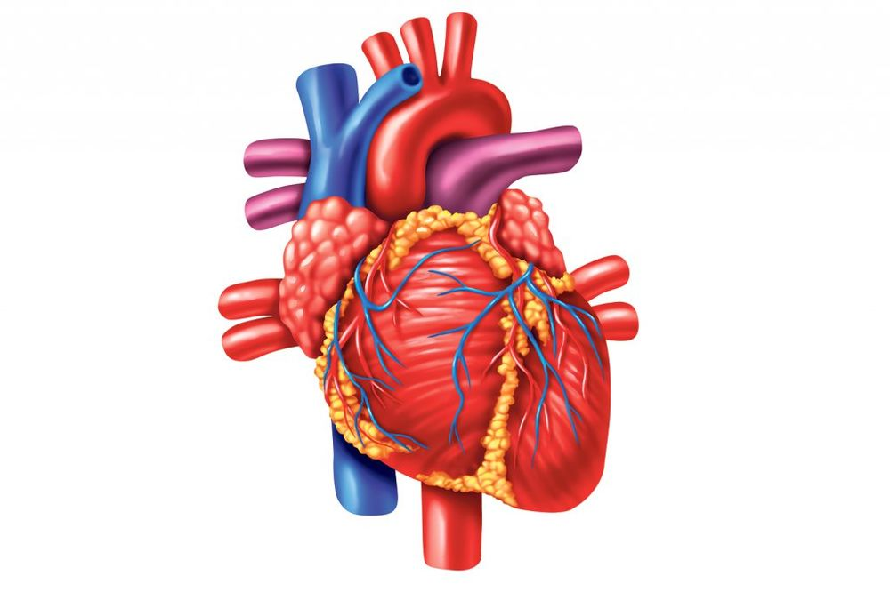

Krv cirkuliše krvnim sudovima, koji obrazuju veoma razgranatu mrežu. Mreža krvnih sudova dolazi do svakog dijela našeg tijela. Možemo je uporediti sa putnom mrežom neke zemlje. Kao što se putevima kreću vozila i prevoze ljude i robu, tako se i krvnim sudovima kreće krv i prenosi kiseonik, hranljive materije, hormone, otpadne materije... Stalnu cirkulaciju krvi kroz krvne sudove obezbjeđuje mišićna pumpa srce. Krvni sudovi i srce čine sistem organa za krvotok.
 |
Srce ima dvije pretkomore i jednu komoru
Srce je šupalj mišićni organ, smješten u grudnoj duplji, između dva plućna krila. Otkucaje srca osjećamo na lijevoj strani, jer mu je vrh okrenut ulijevo. Srce ima veličinu stegnute pesnice i prosječno je teško oko 300 grama. Veličina i težina srca zavise od konstitucije i aktivnosti-srce sportiste veće je nego srce čovjeka koji se slabo kreće. Srce je obavijeno vezivnom opnom-srčanom maramicom. Mišićni zid dijeli srce na dvije polovine-lijevu i desnu. Lijeva polovina srca puni se krvlju, koja dolazi iz pluća i bogata je kiseonikom, a u desnu polovinu srca dolazi krv iz svih djelova tijela i bogata je ugljenik(IV)-oksidom.
Svaka polovina srca podijeljena je tanjim poprečnim zidom na pretkomoru i komoru. Na zidu između komore i pretkomore postoji otvor, koji se zatvara i otvara pomoću srčanih zalizaka. Oni obezbjeđuju da krv protiče samo u jednom smjeru-od pretkomora prema komorama. Zatvaranje zalizaka proizvodi zvuk koji čujemo kao otkucaj srca.
Krvni sudovi
U našem tijelu postoje 3 tipa krvnih sudova.
Arterije su krvni sudovi koji odvode krv iz srca. Najveća arterija u našem tijelu-aorta izlazi iz lijeve komore srca. Aorta se grana u mnogobrojne arterije, koje dospijevaju do svih tkiva. Arterije koje su bliže srcu su deblje; elastično vezivno tkivo u njihovim zidovima omogućava im širenje i skupljanje. Što su dalje od srca, arterije su sve tanje. U zidovima manjih arterija nalaze se glatki mišići, čijom kontrakcijom se pospješuje kretanje krvi. Najmanje arterije se granaju u tkivima u gustu mrežu kapilara, preko kojih se obavlja razmjena materija između krvi i tkiva.
Kapilari su najmanji krvni sudovi, tanji i od dlake. Gusta mreža kapilara postoji u svim djelovima našeg tijela i ima površinu preko 6000 m2! Tok krvi kroz kapilare je veoma usporen, što je značajno jer se tako omogućava razmjena materija. Zidovi kapilara građeni su od samo jednog sloja epitelnih ćelija. Kroz zidove kapilara vrši se razmjena materija između krvi i ćelija tkiva. Krv iz kapilara prelazi u vene.
Vene su krvni sudovi koji donose krv iz svih dijelova tijela u srce. Zidovi vena su tanji i manje elastični od zidova arterija. Krv u venama kreće se suprotno smjeru od smjera djelovanja sile Zemljine teže i zato u venama postoje zalisci, slični srčanim. Zalisci propuštaju krv u jednom smjeru-prema srcu i sprečavaju da se krv vraća nazad ka tkivima. Kretanje krvi u venama pomažu i okolni mišići-grčenjem povećavaju pritisak koji potiskuje krv u pravcu srca.